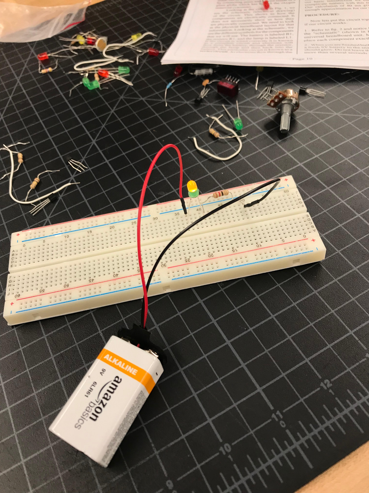
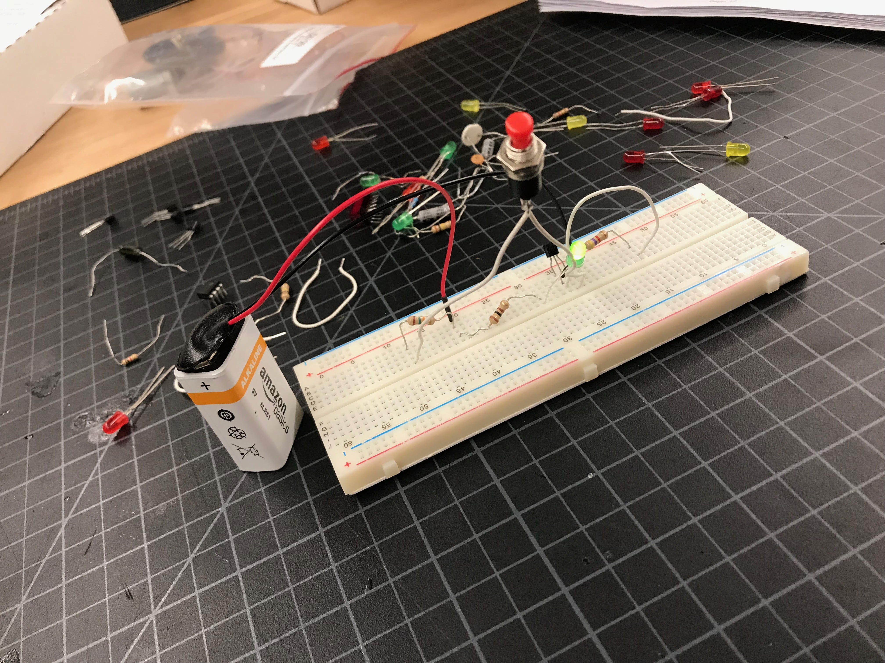
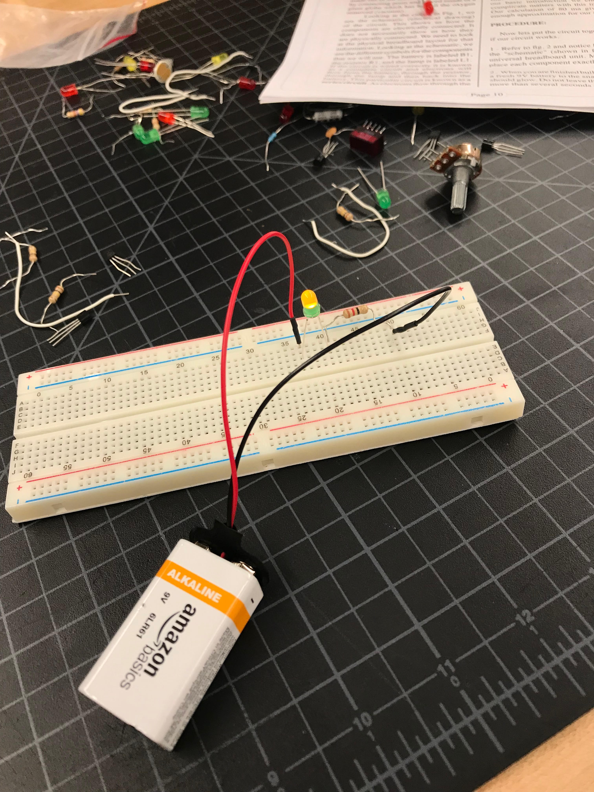
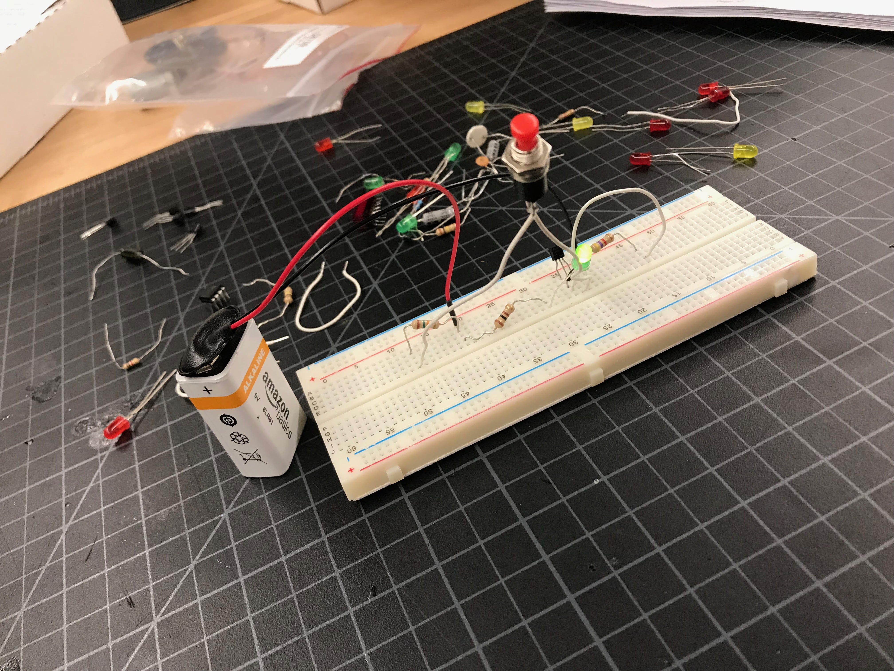

We had to make 15 designs that would either light up or make a speaker work on the circuit board. Those are my 15 designs of the circuit board. The next rask was to saughter and we had to make a clock on a circuit board and saughter the back parts to the board.
Go Back to Index

 


